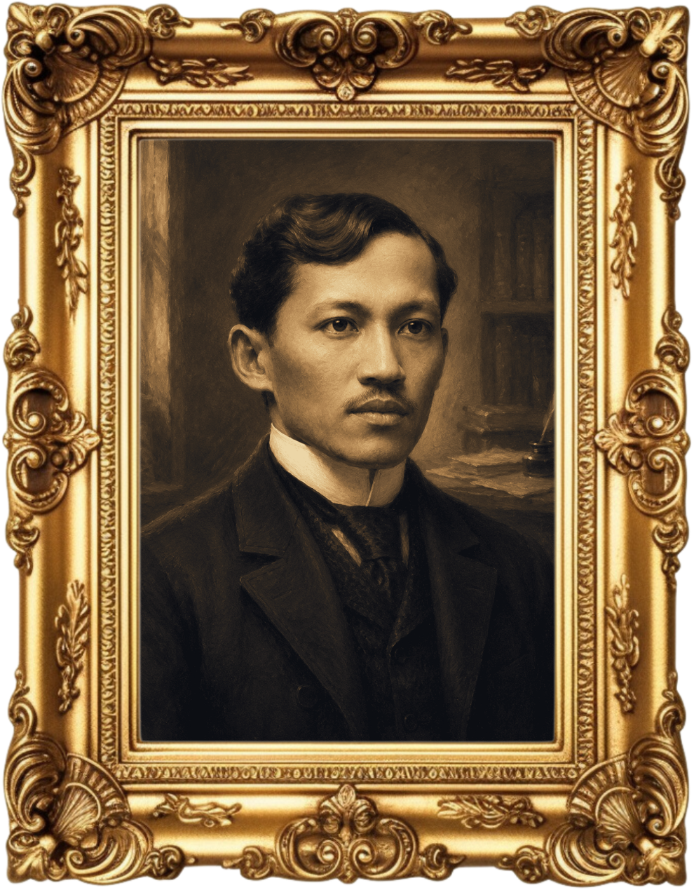

AN INTERACTIVE E-PORTFOLIO
José Rizal:
Life, Works & Legacy
Explore the life and literary contributions of one of the most influential figures in Philippine history.

“
The youth is the HOPE of our future.
— JOSE RIZAL
DISCOVER
What awaits inside?
THE CREATORS
GROUP 2
Adriano, Alia, Baradia, Carigma, Cruz, Espabilla, Fenequito, Nachura